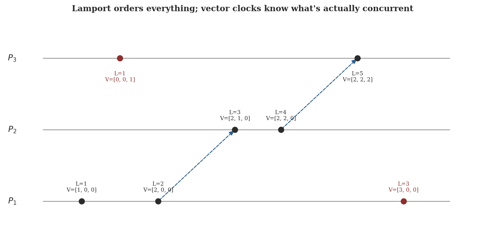
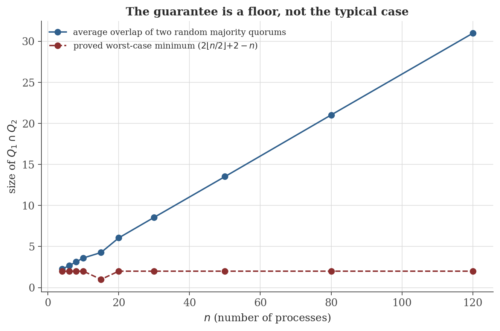

Distributed Systems and Concurrency
Disclaimer: These are my personal notes compiled for my own reference and learning. They may contain errors, incomplete information, or personal interpretations. While I strive for accuracy, these notes are not peer-reviewed and should not be considered authoritative sources. Please consult official textbooks, research papers, or other reliable sources for academic or professional purposes.
Contents
- The system model and failure types
- Logical clocks: Lamport timestamps and happens-before
- Vector clocks: capturing causality exactly
- The FLP impossibility theorem
- The CAP theorem
- Byzantine fault tolerance: the $3f+1$ lower bound
- Quorums and consensus safety
- Computation
- Common pitfalls
- Connections
- References
1. The system model and failure types
A distributed system is a set of processes communicating only by message passing (no shared memory). Asynchronous: no bound on message delay or relative process speed. Crash-stop failure: a process simply halts and sends nothing further. Byzantine failure: a process may behave arbitrarily, including sending contradictory messages to different peers. The consensus problem asks every non-faulty process to decide on a single value satisfying: agreement (no two processes decide differently), validity (the decided value was proposed by some process), termination (every non-faulty process eventually decides).
Almost every result in this note is a statement about which combinations of these assumptions are achievable at all — not an efficiency question, but an existence question, in the same spirit as the computability note's undecidability results. Sections 4 and 6 are impossibility theorems in exactly that sense: no protocol, however clever, achieves certain combinations, full stop.
2. Logical clocks: Lamport timestamps and happens-before
Each process keeps a counter $C$. On a local event or a send, increment $C$. On receiving a message timestamped $t$, set $C:=\max(C,t)+1$.
$a\to b$ if: $a,b$ occur on the same process with $a$ first; or $a$ is a message send and $b$ its receipt; or (transitively) $a\to c\to b$ for some $c$.
$a\to b\Rightarrow C(a)<C(b)$.
The converse fails: $C(a)<C(b)$ does not imply $a\to b$. Two events on different processes that never causally influence each other (concurrent events, written $a\parallel b$) still get some definite pair of Lamport timestamps, usually unequal, which look exactly like a causal ordering from the numbers alone — Figure 1's highlighted pair is a genuine instance of this, and Section 9's first pitfall makes the consequence explicit. Section 3 fixes this by tracking more than a single number.
3. Vector clocks: capturing causality exactly
Process $p_i$ (of $n$) keeps a vector $V_i[1..n]$, initially zero. On a local event or send, increment $V_i[i]$. On receiving a message carrying vector $V$, set $V_i[k]:=\max(V_i[k],V[k])$ for every $k$, then increment $V_i[i]$. Write $V(a)\leq V(b)$ if $V(a)[k]\leq V(b)[k]$ for every $k$, and $V(a)<V(b)$ if additionally $V(a)\neq V(b)$.
$a\to b\iff V(a)<V(b)$.
This is a genuine, not merely cosmetic, improvement: vector clocks recover the entire partial order $\to$ from the numbers alone, including correctly identifying concurrency ($a\parallel b$ iff neither $V(a)\leq V(b)$ nor $V(b)\leq V(a)$) — the exact information Lamport's single counter provably cannot preserve (Section 2). The cost is the size of the timestamp: $O(n)$ integers instead of one, per event.

4. The FLP impossibility theorem
In an asynchronous message-passing system with reliable communication, no deterministic protocol solves consensus if even a single process may crash.
FLP does not say consensus is merely hard in an asynchronous system — like the computability note's Halting Problem, it says no algorithm, however clever, solves the stated problem under the stated assumptions, ever. Real systems escape the theorem's reach by weakening the model it assumes: adding partial synchrony (timeouts that are eventually accurate), randomization (Ben-Or's algorithm decides with probability $1$, sidestepping the deterministic-protocol hypothesis), or failure detectors (an oracle providing just enough timing information). Every practical consensus protocol (Paxos, Raft) is, in this precise sense, a way of buying just enough extra assumption to step outside what Sections 4's theorem forbids.
5. The CAP theorem
No distributed data store can simultaneously guarantee Consistency (every read returns the most recent write, or an error), Availability (every request receives a non-error response), and Partition tolerance (the system keeps operating despite arbitrary message loss between some processes), whenever a partition actually occurs.
In practice the theorem is a menu, not a prohibition: since network partitions do happen, real systems choose CP (refuse to answer $G_2$'s read rather than return a stale value — most consensus-backed stores) or AP (answer anyway, accepting temporary inconsistency, reconciled later — many NoSQL stores' "eventual consistency"). The choice is forced exactly at the moment of an actual partition, not before.
6. Byzantine fault tolerance: the $3f+1$ lower bound
Byzantine consensus among $n$ processes tolerating $f$ Byzantine faults (with no cryptographic signatures) requires $n\geq3f+1$.
Compare Section 7's plain majority bound ($n\geq2f+1$ suffices against crash faults): Byzantine faults cost a full extra $f$ processes, because a crashed process simply goes silent, while a Byzantine one can actively lie differently to different peers — exactly the extra degree of freedom the indistinguishability argument above exploits. Modern Byzantine protocols (PBFT and its descendants) achieve the matching $n=3f+1$ upper bound constructively; the theorem says no protocol, however clever, can do better.
7. Quorums and consensus safety
A quorum system is a collection of subsets of processes ("quorums") such that every two quorums intersect. Majority quorums — every subset of size $>n/2$ — are the standard example.
Any two majority quorums intersect: if $|Q_1|,|Q_2|>n/2$ then $|Q_1\cap Q_2|\geq1$.
If a value $v$ is chosen — accepted by a majority quorum in some round $r$ — then no different value can be chosen in any round $r'>r$.
Every step above traces back to one purely combinatorial fact — any two majority subsets of the same set must overlap — which is the entire mathematical content underneath why Paxos, Raft, and every majority-based replication scheme cannot simultaneously commit two different values in two different rounds. Figure 2 is exactly this guarantee, checked against how much two random majority quorums actually tend to overlap (usually far more than the guarantee requires).

8. Computation
The figures above are generated by distributed-systems/generate_figures.py. The snippet below reproduces the vector-clock event trace and the quorum-intersection check.
events, messages = simulate() # 3 processes, 2 messages, 7 events total
for i, e in enumerate(events):
print(i, e['p'], e['kind'], "L=", e['L'], "V=", e['V'])
import random
rng = random.Random(0)
n, trials = 20, 4000
q = n // 2 + 1
total, mn = 0, None
for _ in range(trials):
Q1 = set(rng.sample(range(n), q))
Q2 = set(rng.sample(range(n), q))
s = len(Q1 & Q2)
total += s
mn = s if mn is None else min(mn, s)
print(f"n={n} q={q} avg_overlap={total/trials:.2f} min_observed={mn} proved_bound={2*q-n}")
Actual output:
0 0 local L= 1 V= (1, 0, 0)
1 0 send L= 2 V= (2, 0, 0)
2 1 recv L= 3 V= (2, 1, 0)
3 1 send L= 4 V= (2, 2, 0)
4 2 local L= 1 V= (0, 0, 1)
5 2 recv L= 5 V= (2, 2, 2)
6 0 local L= 3 V= (3, 0, 0)
n=20 q=11 avg_overlap=6.04 min_observed=2 proved_bound=2Event $4$ (Lamport $1$) and event $6$ (Lamport $3$) are exactly Figure 1's highlighted pair — different Lamport numbers, incomparable vector clocks, genuinely concurrent. Over $4000$ random trials at $n=20$, the smallest overlap ever observed between two random majority quorums was $2$ — matching the proved bound exactly, never falling below it, while the average overlap ($6.04$) sits three times higher.
9. Common pitfalls
Demonstrated in Sections 2–3 and Figure 1: $C(a)<C(b)$ is consistent with $a\to b$, but does not imply it — $a,b$ may be entirely concurrent, with the apparent order an artifact of how the two processes' local counters happened to be running. Code that infers causality from Lamport timestamps alone (rather than using them only for the weaker guarantee they actually provide — a total order consistent with, but not identical to, causality) is making an unjustified inference.
Section 4's impossibility is about a deterministic protocol under a fully general asynchronous adversary — it does not say Paxos or Raft are broken (they are not), only that they rely on assumptions (partial synchrony, randomized tie-breaking, or simply favorable real-world timing that makes worst-case executions rare) strictly outside what the theorem's hypotheses grant. "Impossible in the worst case" and "doesn't work" are different claims, exactly as with the computability note's Section 9 pitfall about undecidable problems having easy typical instances.
Section 5's Consistency means every read reflects the latest completed write, globally — not merely that each individual replica is internally coherent. Systems advertising "eventual consistency" are explicitly choosing the AP side of the theorem (a good, deliberate engineering choice for many workloads), not achieving all three properties by some clever exception to the proof; Section 5's proof holds unconditionally once Partition tolerance is assumed.
Section 6's proof relies on $P_1$ being unable to distinguish which of two groups is lying — an argument that breaks down if processes can cryptographically sign messages, since a signed message from an honest process cannot be forged by a different faulty group pretending to be it. With signatures, Byzantine agreement is achievable with only $n\geq2f+1$ processes (Dolev & Strong, 1983) — the same bound as the crash-fault case in Section 7 — a genuinely different, stronger model with a genuinely different lower bound, not a refinement of the same number.
10. Connections
- Computability and formal languages. FLP (Section 4) is proved by the same style of argument as that note's undecidability results — construct an adversary (here, a scheduler; there, a diagonalizing machine) that always has a move preserving ambiguity, forcing an infinite non-resolving execution rather than a direct contradiction from a single step.
- Type theory and functional programming. That note's confluence theorem (its Section 2) and this note's vector-clock happens-before relation (Section 3) are both partial-order-of-events stories with a similar shape — confluence says the final outcome doesn't depend on evaluation order among independent steps, and concurrent (order-independent) events here are exactly the pairs a scheduler is free to interleave without changing the outcome.
- Discrete mathematics — order theory and graph theory. The happens-before relation (Section 2) is a strict partial order in the standard sense (reflexive-free, transitive, antisymmetric); quorum systems (Section 7) are a purely combinatorial (set-intersection) structure, with the majority case a direct pigeonhole argument, both properly developed in a discrete mathematics treatment of relations and combinatorics.
11. References
- Lynch, N. A. (1996). Distributed Algorithms. Morgan Kaufmann.
- Fischer, M. J., Lynch, N. A., & Paterson, M. S. (1985). Impossibility of distributed consensus with one faulty process. Journal of the ACM, 32(2), 374–382.
- Gilbert, S., & Lynch, N. (2002). Brewer's conjecture and the feasibility of consistent, available, partition-tolerant web services. ACM SIGACT News, 33(2), 51–59.
- Lamport, L. (1978). Time, clocks, and the ordering of events in a distributed system. Communications of the ACM, 21(7), 558–565.
- Pease, M., Shostak, R., & Lamport, L. (1980). Reaching agreement in the presence of faults. Journal of the ACM, 27(2), 228–234.
- Lamport, L. (1998). The part-time parliament. ACM Transactions on Computer Systems, 16(2), 133–169.